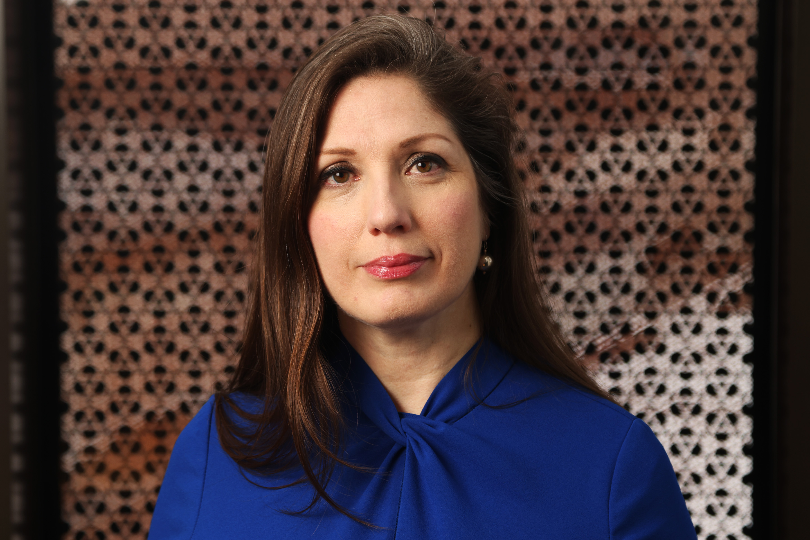

Nathalie Sirois leads the Global Centre for Pluralism’s
efforts to support educators and system leaders in making
pluralism a lived experience in their specific contexts with
a view to building inclusive societies resilient to fear and
hate. She spent over 20 years in K-12 public education in a
variety of roles, including community worker, teacher,
instructional coach, consultant, in various system leader
roles and as an advisor and coach to senior leaders. As one
of the first Senior Advisors for Equity, Human Rights and
Pluralism in a French-language school board in Canada, she
contended daily with the systemic effects of the double
minoritization of francophone students and staff from
historically marginalized communities. Her journey has also
brought her to offer training and to publish various
resources on trauma-informed practice for educators and on
educational leadership. Nathalie will be running a workshop
during the summit; "Recrutement, Rétention: Reconnaissance,
Appartenance"